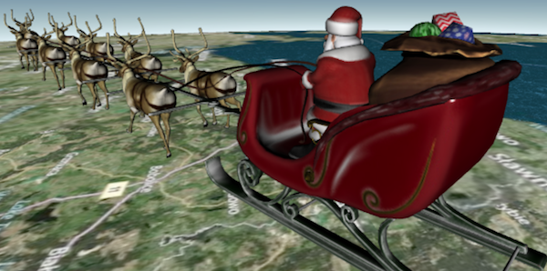
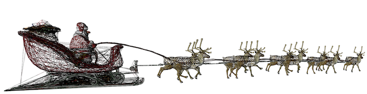
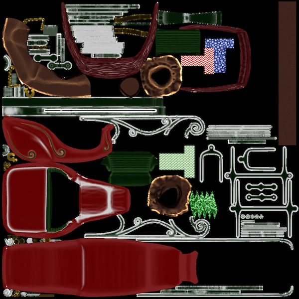
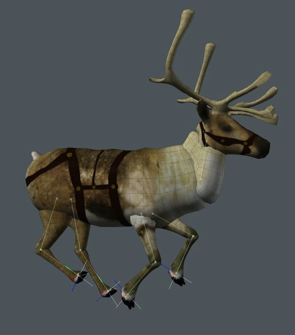
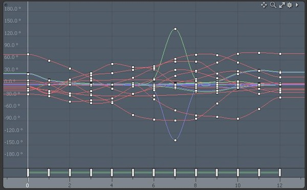
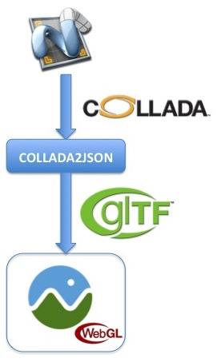
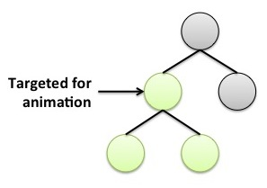
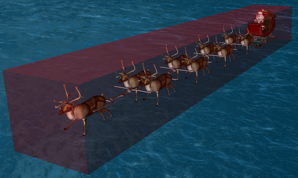

Once again, NORAD's santa tracker is built on our WebGL-based Cesium engine. This year, we added an animated 3D model for Santa and his sled and reindeer using glTF, an emerging open-standard runtime asset format. This article describes the content pipeline and runtime optimizations that will bring the model from artist tools to literally millions of web browsers.

The art is the work of AGIer Branden Coker (@planetpuncher). It was created in Modo and is composed of 26,762 triangles (reindeer meshes are reused) and three 1024x1024 texture atlases.

Each texture atlas stores several individual textures, which reduces the number of network requests and allows fewer draw calls at runtime.

Three parts of the model are animated: the galloping reindeer, the swaying linkage, and Santa's reins. Each reindeer has 11 animation channels to move all its parts.

The animations are keyframed rotations, no translation or scale was needed. At runtime, keyframes are stored in a quaternion spline and evaluated using spherical linear interpolation.

With all its moving parts, there is a total of 120 animation channels. Depending on what else is in the scene, at runtime, evaluating these animations takes between 0.8% and 1.6% of a frame's time. Then another 0.4% to 1.2% is spent updating the transformation matrices.
This could be made more efficient by avoiding duplicate evaluations (the reindeer all have the same keyframes, they are just offset) and using instanced rendering, but we ran out time. Christmas Eve is as fixed as a deadline comes.
To get the model from Modo to the engine, we first export to COLLADA. We noticed that the exporter wrote over 50 extra leaf nodes without geometry so we used an in-house optimizer to remove the unnecessary nodes. This is a small size win and a nice performance win at runtime since those nodes' transforms do not need to be computed. Although the exporter turned out to be pretty reliable, we ran into a handful of issues like this that we will submit.

Next, we ran the COLLADA through the open-source collada-to-glTF converter with the default options. This produced a glTF model that is ready for engine use. Geometry and animations are stored in a binary file with vertex and index data ready for use with WebGL. GLSL shaders were automatically created from the COLLADA common profile and, again, ready to be used in WebGL. The node hierarchy and remaining data were converted to glTF's JSON schema for easy parsing in JavaScript.
The model is served to the client gzipped. The three gzipped texture atlases, which are mipmapped on the client, total 900K. The rest of the model - the node hierarchy, geometry, animations, shaders, etc. - total 540K gzipped, compared to the original COLLADA file, which gzips to TODO. The COLLADA-to-glTF converter also has support for Open3DGC compression, but we ran out of time to add support to Cesium for this app.
At runtime, we make a single XMLHTTPRequest per file to reduce the number of requests, instead of progressively loading chunks of geometries and animations. Vertex data is loaded into a single WebGL buffer object and so is index data. Each mesh is rendered with the vertex array object extension, when available, to improve performance. Between each draw call, only required state changes are made.
Given that the model is closed and opaque, it is backface culled. It is also view frustum and horizon culled, which Cesium provides by default, but these don't help unless the user enters free roam mode.
Animations are evaluated using a tightly-coded implementation of spherical linear interpolation with no memory allocations. Transforms in the node's hierarchy are updated only if they or one of their ancestors where targeted by an animation that frame as shown in green below. This minimizes the number of matrix compositions from TRS components and matrix multiplies. The entire graph is still walked, but that needs to happen regardless to multiply the final model-to-world transform for the moving model. Given that all the matrices are affine transforms where the bottom row is [0.0, 0.0, 0.0, 1.0], we use a custom matrix multiply to eliminate any redundant computations.

There is also a collision bounding-box around the model that prevents the viewer from going inside it. The box is sized large enough so that it always bounds the model and does not require any updates in respond to animation.
